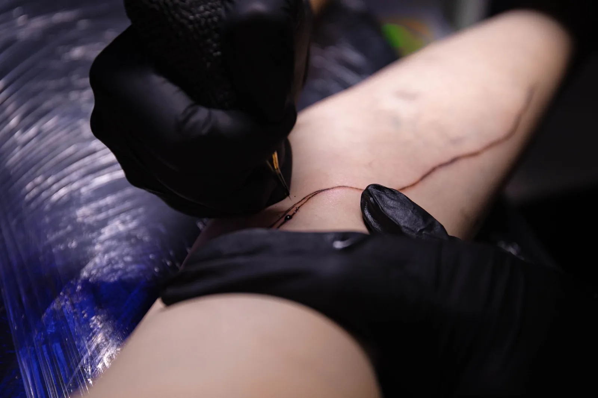
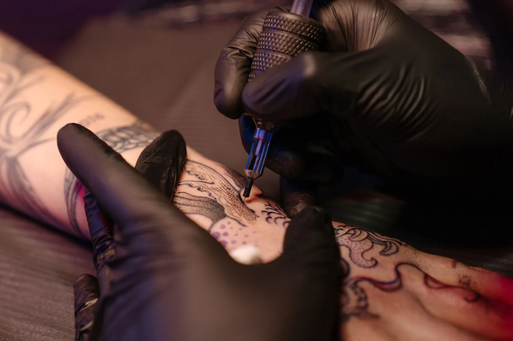
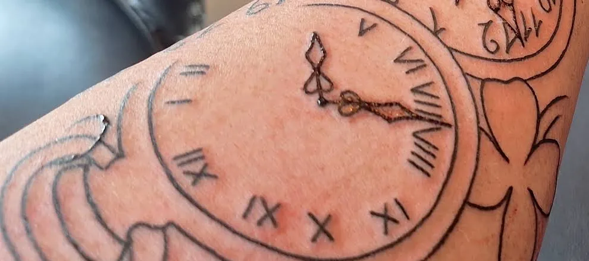
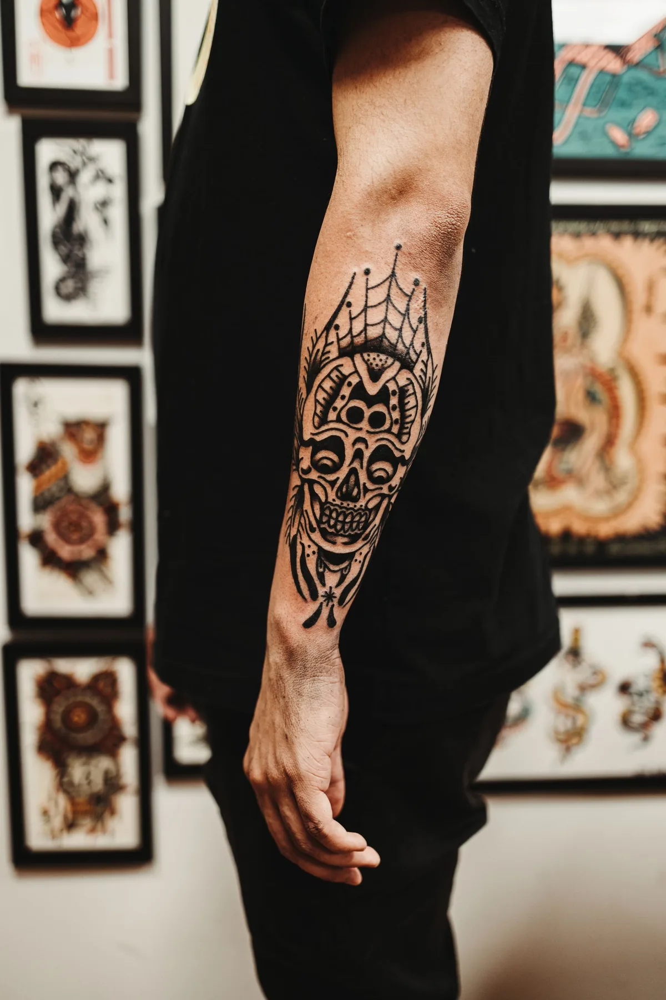
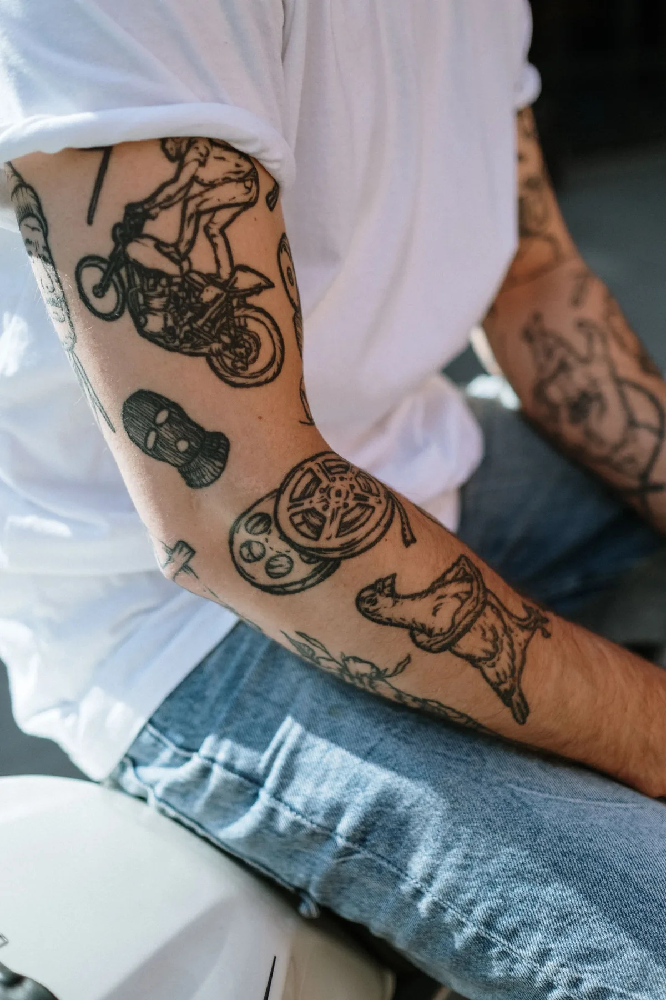
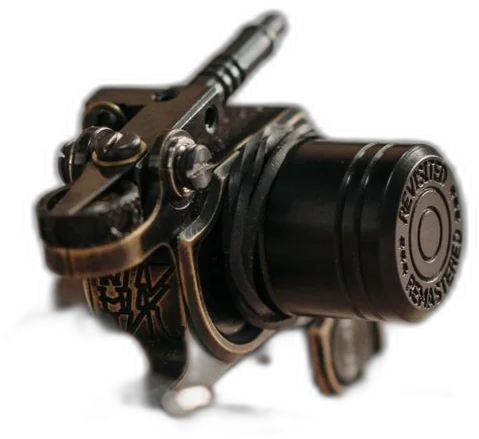

Je eerste tattoo
Een beetje zenuwen hoort erbij. Je krijgt alle uitleg vooraf en we nemen er gewoon wat meer tijd voor.
- Uitleg vooraf
- Op je tempo
Of het nu je eerste is of al je zoveelste: je krijgt duidelijke uitleg en je zit hier meteen op je gemak.
Geen verrassingen: je weet vooraf wat het wordt en wat het kost.

Hier zit je niet in een fabriek. Je komt binnen, vertelt wat je wil, en samen kijken we hoe het mooi wordt op jouw huid. Pas als het klopt, begint de machine te zoemen.
Twijfel je over de plaats of de grootte? Dan zeggen we eerlijk wat werkt, en wat beter niet.

Steriel en rustigHeb je al een tekening, of enkel een gevoel? Allebei goed. Stuur door wat je hebt, dan bekijken we samen wat het mooist werkt.
Een beetje zenuwen hoort erbij. Je krijgt alle uitleg vooraf en we nemen er gewoon wat meer tijd voor.
De naam van je kind, een datum die telt of een paar woorden. In een lettertype dat bij jou past.
Een klok, een klavertje, een symbool met een verhaal. Getekend voor jou en voor de plek waar het komt.
Twee zakhorloges met Romeinse cijfers en een klavertje vier, net gezet. De naam en de datum die erbij hoorden, laten we bewust uit beeld.

Gezet bij Lucky 13

Een foto, een krabbel of een paar woorden. Stuur het door, ook als het nog maar half af is.
Stuur het doorVia WhatsApp, met een foto van de plek en een idee van de grootte.
Je krijgt een duidelijke prijs en een ontwerp dat we samen bijsturen.
Steriel materiaal, een goeie stoel en niemand die je opjaagt.
Ingepakt en met uitleg over de verzorging. Vragen achteraf mogen altijd.

Stuur best eerst even een berichtje, dan ben je zeker dat er tijd is voor jou.
Stuur je idee via WhatsApp of bel gewoon even. Samen zoeken we een moment dat past.
Ik maakte deze demo voor jullie om te tonen wat er kan. Na een kort gesprek maak ik er iets veel persoonlijkers van, helemaal naar jullie wens.
Vrijblijvend. Ik kom langs of we bellen.
Op maat, op jullie eigen domein.
Geen voorschot. Jullie betalen pas als alles klaar is.
Hosting, domeinnaam en kleine wijzigingen, zoals nieuwe openingsuren.
Omdat een voorbeeld meer zegt dan een mail. Zo zien jullie meteen wat er kan, en het kost jullie niets.
Nee. Het gesprek is vrijblijvend. Vinden jullie het niks, dan is het daarmee gedaan.
Na ons gesprek staat jullie site binnen 10 tot 14 dagen online.
Zeker. Jullie domeinnaam kan gewoon blijven, de nieuwe site komt in de plaats van de oude.
Nee, dat doe ik op basis van ons gesprek. Eigen foto's zijn mooi meegenomen, maar niet nodig om te starten.